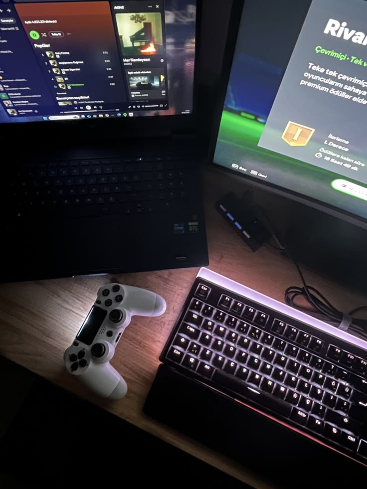
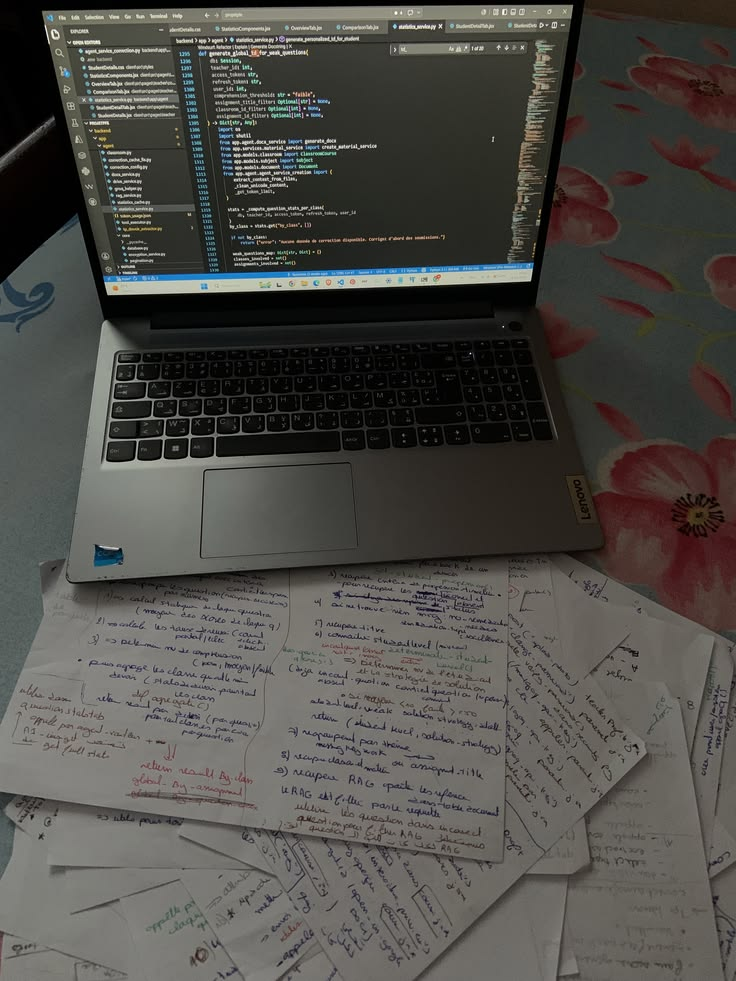

About Me
My name is Mulenga Mwamba, and I am a second-year Bachelor of Science in Data Science student at Mulungushi University in Zambia. I chose Data Science deliberately: I wanted an IT career that would still be well paid and in demand by the time I graduated, without being so saturated that a four-year degree would arrive too late — and it turned out to be challenging enough to hold my interest. My long-term ambition is to become a "unicorn" in tech: data will stay my professional major, but I want real competence across cybersecurity, web development, game development, and machine learning as well. Building this website is a small step in that direction — the web development side of that goal.
My Hobbies
- Gaming
- Fantasy story writing
- Watching anime
Steps to improve my web development skills
- Work through Learning Web Design: A Beginner's Guide to HTML, CSS, JavaScript, and Web Graphics by Jennifer Niederst Robbins, chapter by chapter
- Practise by rebuilding tiny web pages of different formats and content types from scratch, without copying a template
- Once HTML/CSS feels solid, move on to a short JavaScript primer focused on DOM manipulation and forms
My Learning Plan
I prefer learning from books over live sessions or YouTube — I can scan pages as fast as I want to find exactly what I need and skip what isn't relevant, whereas a video might not even cover what I'm looking for and I have to sit through it to find out.
A weekly plan I am following while I build my web development skills.
| Day | Topic | Practice Task |
|---|---|---|
| Monday | HTML structure and semantics | Rebuild this page's markup using only semantic elements |
| Wednesday | CSS layout (Flexbox and Grid) | Recreate the photo gallery using CSS Grid |
| Friday | Forms and accessibility | Add client-side validation messages to the contact form |
| Saturday | Introductory JavaScript | Make the navigation highlight the section currently in view |
My Photos
A few photos from my life as a student.



My Media
Self-introduction video
Transcript: "Hi, my name is Mulenga Mwamba. I'm a second-year Data Science student at Mulungushi University, and one web skill I hope to learn is JavaScript, so I can add animations and make my pages interactive — things that respond to clicks, scrolling, typing, and hovering."
Audio clip
A quick, unscripted take on why gaming is my top hobby.
Contact
This form is a browser demonstration only; it does not send data anywhere.